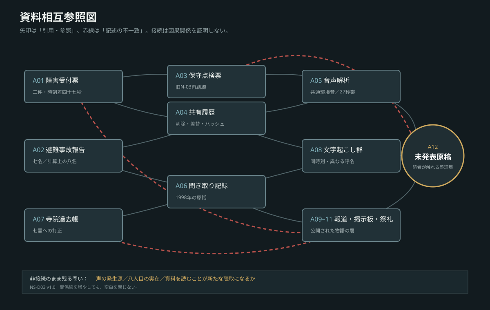

本文へ移動
UNREGISTERED BROADCAST
話数
資料
地図・図版
予告版
CASE NS-2026-0723 / COMPLETE EDITION
未登録
放送
市の記録にない放送が、聞く者ごとに違う名前を呼ぶ。
第1話から読む
予告編を見る
本文
全38話
資料
12点
形式
調査・考察型ホラー
NS-P02 / OLD N-03 INSPECTION
序章
記録番号なし
A−
A＋
夜／紙
VISUAL RECORDS
地図と図版
鳴代市概略図
1989年避難経路
2026年音列経路
防災無線構成
音声同期比較

証拠参照関係
目次
×
×